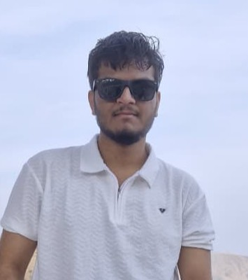

About
I’m an AI and computer vision engineer currently working as a Member Technical at ADP in Hyderabad. My work includes agentic AI and smart-assist systems, while my research interests span computer vision, medical image analysis, and 3D scene reconstruction.
I graduated with a B.Tech in Computer Science and Engineering from Assam Don Bosco University. Over the past few years, I have worked on oral cancer image analysis, H&E-stained histopathology, image-processing pipelines, and neural representations of Assamese cultural heritage.

Experience
Member Technical
Working on WFN / ADP Assist initiatives, with exposure to agentic AI, LLM-powered smart-assist systems, and production software engineering.
SDE Intern
Worked on WFN, developing ADP Assist within the in-house agentic AI system for PTO.
SDE-1
Developed and fine-tuned large language models for intent identification and natural-language-to-SQL query generation, including dynamic context-window management and prompt engineering.
SDE Trainee
Designed and developed a deterministic weighted algorithm for mutual fund redemption, addressing edge cases while supporting transparency, consistency, and banking-domain requirements.
Research and Development Intern
Worked on H&E-stained oral squamous cell carcinoma (OSCC) histopathology, semantic annotations, deep-learning-based segmentation, and evaluation across public and Northeast India datasets.
Research and Development Intern
Worked on image-processing methods for smartphone-captured oral lesion images, including preprocessing and resizing workflows for computer-aided analysis.
Research & Selected Projects
Computational Pathology · OSCC
Deep-learning-based segmentation of oral squamous cell carcinoma in H&E-stained histopathology images. Evaluated YOLOv11, YOLOv12, and U-Net, including cross-dataset experiments on public OCDC and an indigenous Northeast India dataset.
Oral Lesion Image Processing
Preprocessing and resizing workflows for smartphone-captured intraoral images, with a focus on preserving diagnostic information for downstream computer vision models.
Clay to Cloud · Assamese Heritage
IndiaAI UG Fellowship project exploring neural scene representations and 3D reconstruction of Assamese terracotta artefacts, including work with photogrammetry and 3D Gaussian Splatting.
Agentic AI & LLM Systems
Industry work and ongoing learning around agentic workflows, LLM-powered assistants, tool integration, and practical software engineering.
Publications
Automated Binary Segmentation of Oral Squamous Cell Carcinoma in H&E-Stained Histopathology Slides Using YOLO-Based Deep Learning Models
Rupesh Mandal, Shubham Tarafder, Nupur Choudhury, Mrinmoy Mayur Choudhury, and Mukhtanjali Deka.
DOI: 10.1007/s42979-026-05038-w
Additional Research Manuscripts
Two further manuscripts are currently under peer review. Full titles and publication details will be added when their publication records are available.
Education & Recognition
B.Tech · Computer Science and Engineering
Graduated in 2026.
IndiaAI UG Fellowship 2026
Selected as a fellow for the project on neural scene representation for Assamese cultural heritage, alongside the student project team.
Technical Skills
Connect
Email · LinkedIn · GitHub · ORCID